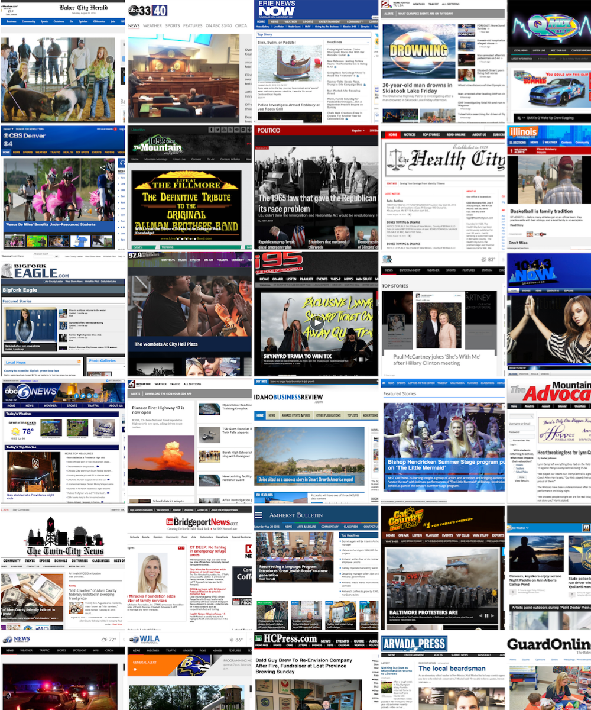
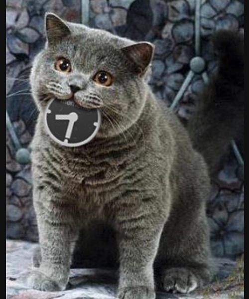
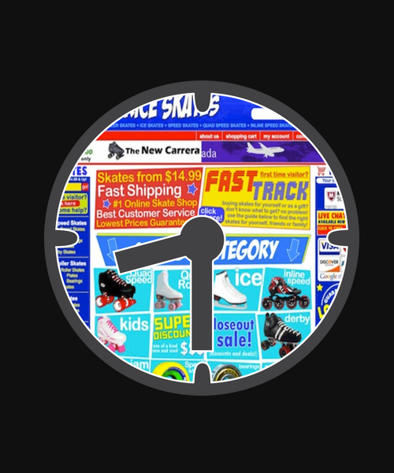

StoryGraph periodically generates a news similarity graph. The nodes of the graph (e.g., Kavanaugh hearings above) represent news stories and an edge between a pair of nodes represents a high degree of similarity between the nodes.

Local Memory Project helps users and small communities discover, collect, build, archive, and share collections of stories for important local events from local sources.

#icanhazmemento is a Twitter bot that replies a tweet that contains the hashtag and a URL, with an archived copy of the URL.

What Did It Look Like is a Twitter bot that replies a tweet that contains the #whatdiditlooklike hashtag and a URL, with Tumblr post of the yearly timelapse of what the webpage looked like.
Eoin C Whelan, Alexander C Nwala, Christopher Osgood, and Stephan Olariu. Selective mutation accumulation: a computational model of the paternal age effect. Bioinformatics, 32(24):3790–3797, 2016.
Wu He, Ashish Kshirsagar, Alexander Nwala, and Yaohang Li. Teaching information security with workflow technology–a case study approach. Journal of Information Systems Education, 25(3), 2014.